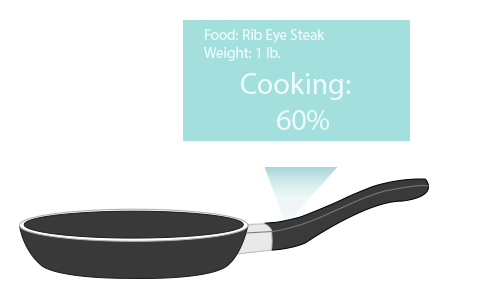
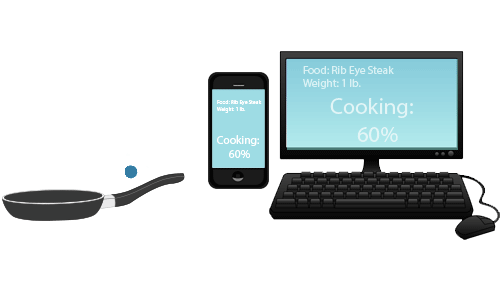
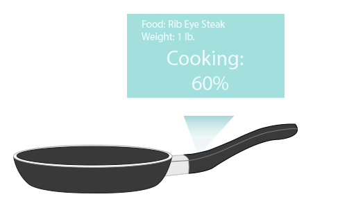
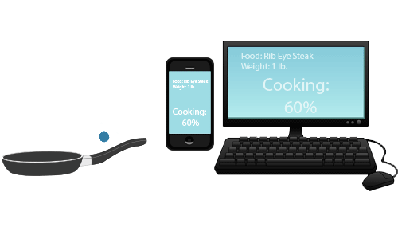

On the handle of the pan, there is a holographic display monitor that shows the data.
The data can also be connected to your phone and computer via wifi.
The pan that tracks your cooking process!
On the handle of the pan, there is a holographic display monitor that shows the data.
The data can also be connected to your phone and computer via wifi.
